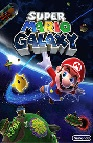
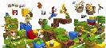
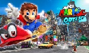

Super Mario 64, the original 3D Mario game, was very popular and inspired many future Mario Games
Super Mario Galaxy, my personal favorite Mario game, takes place in space. Because of its success, Super Mario Galaxy 2 was created.
The squeal to Super Mario Galaxy, Galaxy 2 comes with double the missions and a much brighter feel.
>Moving on to portable consoles, Super Mario 3D Land is the first 3D Mario game on something other than a home console. Made for the 3Ds and then recreated for the Wii U, this took a whole new turn on the future of Mario games.
The most recent 3D Mario game in the series, Super Mario Odyssey was made for the Nintendo Switch, a console that can transfer from a home console to a portable one with ease.